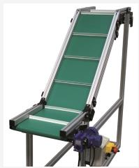

In today’s business climate, every minute and penny counts. EAM offers a standard line of equipment to help provide solutions to improve efficiency, reduce waste and increase margin with our packaging machinery.
SPM is involved in the business of manufacturing, exporting and wholesaling a wide array of The range offered by us encompasses Standardized Precision Roller Chains, Designed Special Purpose Conveyor Chain, Slat Band Chains, Flat Belt Conveyor, Trough Conveyors and Flat Food Belts. In addition, customers can avail from us a wide range of Gravity Roller Conveyor, Powered Roller Conveyors, Belt Type Bucket Elevator and many more. These products are manufactured using excellent quality raw material in compliance with the international quality standards. Moreover, our products are acknowledged for their features like sturdy construction, optimum performance and resistance against corrosion.
We are expert in designing and developing flat belt conveyor belts and accessories for specific applications. These conveyor belts and accessories are manufactured to the most exacting levels of quality. We add value to every product by backing it up with responsive and effective one-to-one customer service. We also offer smart high speed conveyor with speed up to 150 m/min. We also offer long jumbo flat belt conveyors up to length of 50 meter.
Level differences are often bridged with inclined conveyors, for instance in the plastic injection moulding machines sector. Both modular belt conveyors and conveyors with timing belts, but also belt conveyors, are available for this. The lengths of the individual segments of the conveyor or the distances between the cleats can be adapted to the customer’s needs.

Timing Belt Conveyor are mostly used for heavier workpiece weights or stricter requirements on precision. In addition, they are frequently used in multi-track conveyors that place strict requirements on the synchronicity of the conveyor strands. In contrast to belt conveyors, workpiece-specific attachments can be added very easily. A common use is for supplying workpiece carriers to robot cells or gantry loaders.
Besides belt conveyors, roller conveyors are standard conveyor technology. They are used frequently, especially for plastic containers or packages with heavy weights. As with all our standard modules, the support is based on item-profile. Therefore, it is easy to incorporate these modules into your production environment. Besides standard roller conveyors, curved roller conveyor are available. Furthermore, the systems can be designed as driven roller conveyor or gravity roller conveyor.
Modular belt conveyor are a middle ground between belt conveyors and chain conveyors. A modular belt consists of individual plastic modules usually linked together with joint rods. This modular belt is driven by chain spockets; the base frame of the conveyor is constructed on standard profile supports. The modular belt makes it possible to accept hot workpieces or workpieces with sharp edges. Furthermore, large conveyor widths can be implemented without high pre-tensioning of the belts. However, in contrast to chain conveyors, this design is less maintenance-intensive and is a technically simpler solution. These systems are frequently used as cooling lines, since the chain modules can be designed to be permeable to air.
Vibratory bowl feeders are a very common type of parts feeder, and they are a critical part of an automated assembly system. Vibratory bowl feeders move parts around a bowl and into channels in a way that ensures they are perfectly aligned for how the automation system needs them. Vibratory bowl feeders make sure parts are continually being presented to the automation system, so that it can perform as designed and maintain a high production rate. Vibratory bowl feeders also reduce labor, because they require very little human interation. We can develop vibratory bowl feeders from 6″ to 36″ in diameter. For optimum efficiency, we design and fabricate our bowl feeders simultaneously. Each bowl is custom built to meet the customer's exact specifications, regarding part configuration, feed rate and orientation. To ensure the precise handling of almost any size and type of part, whether small or large, delicate or heavy duty, every SPM bowl feeder is designed and hand-crafted in-house using 11-gauge stainless steel. Type 304 stainless steel is standard, while Type 316 stainless steel is used in medical applications.
Innovative, high quality series of feeders providing powerful, automated feeding and collating solutions for standard and customized applications. Feeders are crucial add-ons to our packaging machines. Our feeding systems are designed and built based on our technical know-how and valuable experience gained over the years. The feeders can be combined on our packaging machines or be supplied as stand-alone systems used for separating, counting and selective feeding of flat products.
ANALYTIC SOLUTIONS © 2019, All rights reserved Design by TRIOZ TECHNOLOGIES